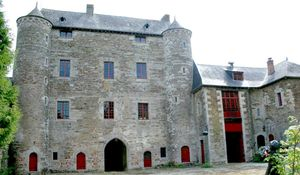
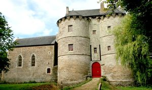
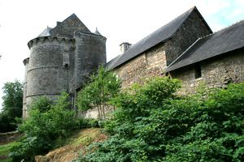
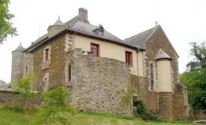
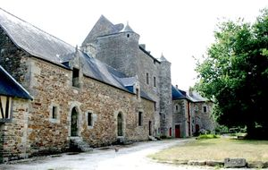
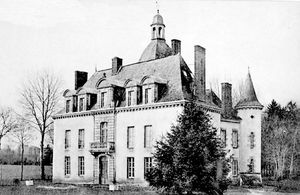
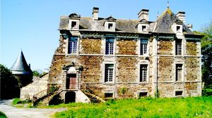
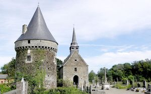

Recensement Jean-Claude Truffet








| Département | 35 — Ille-et-Vilaine |
| Canton | Montauban-de-Bretagne |
| Commune | Montauban-de-Bretagne |
| Type d'édifice | Château |
| Période d'origine | XIII-XV-XVII |
Deux châteaux à Montauban de Bretagne, dont Montauban et Ribaudière et à deux K.M à l'est le Lou du Lac château MONTAUBAN, est un exemple, que l'on peut estimer unique en Bretagne, de l'évolution d'un site défensif au cours du Moyen-Age. Le premier château fut construit par la famille de Montfort, à une date inconnue, entre le Xe et le XIIe, époque où se diffuse le type de la motte castrale : celle de Montauban est encore reconnaissable de nos jours. Elle était surmontée d'un donjon de bois, la motte fut sans doute abandonnée dès le XIIIe siècle au profit d'un château, élevé à l'emplacement du château actuel. propriétaire monsieur Von O Ntrup. Le LOU du LAC, du XVe siècle-1657, reconstruit à plusieurs reprises. Le château était jadis entouré de douves et flanqué de quatre tours. Il se compose de deux constructions avec un rez-de-chaussée élevé, un étage, des corniches modillonnées et des gerbières à frontons alternativement arrondis et triangulaires. Le Lou est érigé en châtellenie en 1637 et possédait autrefois un droit de haute justice exercé à Montauban ainsi que des fourches patibulaires à quatre piliers. Le château se compose de deux constructions dont l'une date de 1657. Sur l'autre édifice, on peut voir un écusson aux armes de Jacques de la Lande et de Geneviève de la Chapelle, son épouse, avec la date de 1571. Propriété successive des familles Méel (au XVe siècle), de la Lande (en 1513), Aubert sieurs de Sauvé (en 1733 et en 1789), Freslon ; Olivier de Méel est sans doute le membre le plus connu de cette famille. Du château construit en 1657, il ne reste quune large bâtisse. Lendroit, en pleine campagne, est paisible. Ici, évoquer Marie Berthier, cest inévitablement parler de son bar installé au château du Lou, sur la commune du Lou-du-Lac. Un bistrot dans un château du XVIIe siècle.
MONTAUBAN, le nouveau château, en pierre, a été construit sur un plan hexagonal, en tirant parti de la défense naturelle fournie par l'étang à l'ouest, et en complétant la défense à l'est par un important système de défenses avancées : douves, cavaliers, entrées successives. De cet édifice du XIIIe siècle subsistent l'actuel donjon, modifié depuis et la tour des Anglais. L'ensemble fut complété en 1430 par le châtelet qui devint caduque avec le développement de l'artillerie au XVe siècle. Charles VIII ne rencontra guère de difficultés pour investir l'édifice par son point faible en 1487. Le logis et sa tour furent entièrement détruits et le donjon partiellement. Le château perdit de son importance et ne fut que sommairement reconstruit. Éléments protégés MH : le château en totalité, à savoir le châtelet, l'aile nord (communs), le logis sud intégrant la tour du Renard, la chapelle, la tour dite donjon, les ruines du logis seigneurial, la tour dite des Anglais, les deux corps de communs au nord-ouest de la cour, : classement par arrêté du 6 mars 2003. RIBAUDIERE, site ancien mentionné dès le XIVe siècle. Un château du XVIIIe siècle a été presque complètement reconstruit lors d'une campagne de travaux du milieu du XIXe siècle. Orain écrit : "Le château de la Rubaudière, sur les rives de l'étang de Chaillou, est de construction récente. Il a remplacé l'ancienne maison noble de ce nom". Le château de la Ribaudière est réalisé pour Joseph Trouessart. Peut-être doublement du corps de logis existant.
le Lou: Famille Méel Montauban : monsieur Von O Ntrup Ribaudière ; Joseph Trouessart
"
Deux châteaux à Montauban de Bretagne, dont Montauban grav- 1à 5 et Ribaudière grav_6 et à deux K.M à l'est le Lou du Lac grav -7-8 château gps 48° 12' 52" nord, 2° 03' 18" ouest